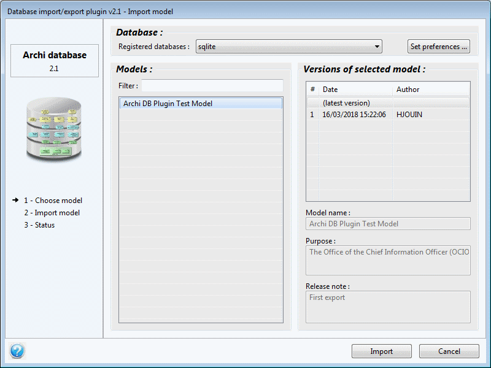

Import a model from a database
This page describes how to import a model from a database.
To import a model from a database, you can access the File / Import / Import model from database menu option of Archi, or if no model exist in Archi, right-click on model's tree area and select the Import model from database context menu option.
The graphical interface
As every window of the database plugin, the import window is split in 5 zones:
- The left zone shows the plugin's logo and the list of actions.
- The right hand-side of the import window is split in 3 zones:
- The database selection
- The models
- The versions of the selected model

The database selection
This section allows to select the database from where the model should be imported. The databases are presented in the order defined on the preference page.
The "set preferences" button allows to directly open the preference page to update the database list or set preferences.
Please note that the Neo4j databases are not presented here as the plugin uniquely allows exports to Neo4j databases.
The models
The models that are found in the database are presented in alphabetical order. A filter allows to limit the list to models having the specified string in their name (case insensitive). You may use the percent sign (%) as a wildcard.
The versions of the selected model
Once you select a model, the versions of the selected model are displayed.
Once on select a version, it's name, purpose and release note are displayed.
Importing a model
It is possible to import a model by a double-click on the desired version, or by a simple click on the "Import" button:
- When a numbered version is selected, the plugin imports the version as it was when it has been exported. This means that any update done after the export on the model components, through other models, are not taken in account.
- When the special "latest version" version is selected, the plugin imports the latest version of all the model components, even if they've been updated through other models.